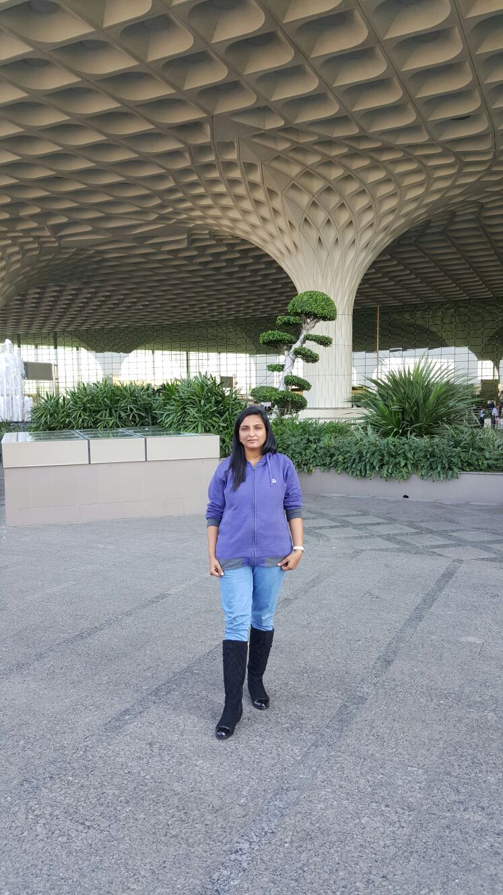

Devanshi Trivedi
About me...
I am currently pursuing my graduation in Software Engineering in Arizona State University which is one of the best universities in the USA according to USNews report. I am a software developer, web developer and mobile application developer who is always eager to learn new technologies and explore new creative ideas. Prior to joining Arizona State University, I worked in my own startup named ‘Soft Soluca’ as a developer and requirement engineer. In my startup, I helped many students in their academic projects. My startup motive was not only to develop projects for my customers but also involve them in project development processes as well as motivate and culture their creativity. My favorite part of work was developing Java based projects and teaching students the core Java concepts which were the projects requirements. I am passionate about knowing people and cultures which are reflected in my past accomplishment of maintaining good customer relationship. My coworker always appreciated my passion for adapting new things and my hard work in research before coming to any conclusion or suggesting any ideas. I have my BE in Maharaja Sayajirao University, Vadodara, India which is one of the reputed and best Universities of India. I am currently looking for a full-time opportunity and will be graduating in May 2017. I can be reached by this profile. (See Below Links) I am always interested in hearing from creative people.
About my Work...
Co-Founder, Software Developer and Requirement engineer
Soft Soluca,
June 2013 – January 2015 (1 year 8 months)
In my work experience in Soft Soluca, I developed many projects in c, c++, Java, SQL, etc. for undergraduate students and helped them to understand it.
The main project areas were networking and security, graphics and databases. I was also teaching the project related concepts to the students.
I have excellently managed to work in the team environment and perform requirement engineering with Agile methodology. Also, I used to prepare detailed
reports concerning project requirements, specifications and activities.
I have achieved the goal of maintaining good customer relationships and developing people skills while working on the recommendation basis.
Skills...
Languages
- C
- C++
- Java
- Python
- SQL/PL-SQL
Java
- Servlet
- RMI
- JDBC
- Networking
- Collections
- JSP/JSTL
Web Development
- HTML5
- CSS3
- JavaScript
- PHP
- BootStrap
- AJAX
- NodeJs
- XML (XML Schema, XPATH, XSLT, RDF, OWL)
Mobile and Database
- Android Studio
- Oracle10g
- MySQL
Technology
- Hadoop
- OpenStack
- HortonWorks Ambari
- Apache Tomcat
- Linux (OS)
- Eclipse
Miscelleneous
- SDLC (Software Development Life Cycle)
- OOPs
- Agile development
- Requirement Analysis
- Project Management
Projects...
Work Projects
Pizza Order Application
An Android pizza order application that will allow the user to make their own pizza by choosing various options i.e. crust, toppings, etc. The application will automatically estimate delivery time and delivery charges according to location. User can also add account information and send it to the order recipient using that application. Android application uses RMI for establishing connection at client side, Threads to handle multiple connection at server side, requires registration on the first use and uses backend database to recognize user.
Library Management System
A robust library management software which allows administrator to manage books and students to search a book according to the availability. The software also keeps track of individual student accounts. The software involves complex database and algorithms to keep tracks of login information, book lists, book condition, Borrow charges, lost books, payment, book availability, etc. It offers descent UI to students for querying books according to different criteria.
Shooting Stars Game
A three level game using Java graphics. The game displays results after every level and redirects to the next level according to the performance. Used complex coding for the animation effect and events as well as threads for moving different objects simultaneously with sound effects.
Online Voting System
An online voting website using servlet and RMI technology that will check for registered user on login and provide user interface for selecting candidates. Uses backend server side database for checking eligible voter. Uses Java RMI, servlet and backend database.
Quote Application
An offline Android application with a library of quotes which shows various quotes according to the category. The application also provides an user interface to select and query a quote according to user's mood requirements. The application was offline and provided with offline database.
Online Adaptive Exam website
An online Exam website which involves backend server and database of various questions with different difficulty level. The Exam is adaptive according to user performance and involves complex algorithm for performance analysis.
online chatting
A chatting service that uses server as middle interface between two different clients and allow them to chat. The application involves user registration on first use and then after allow user to find their friends according to basic info, accepting and unaccepting chat requests and blocking feature.
Graphics Editor
A graphics editor which helps user in adding various shapes in various sizes and color them. The editor was made in C language, events and also allows user to draw free-hand drawing.
Balloon shooting Game
A C++ based game which uses graphics, threads and events to represent dynamically moving balloons, shoot them and shows user performance at the end of the game.
Doctor Software
A doctor software shows the collection of symptoms which patient has to choose. After collecting information from the patient, the software automatically diagnoses the possible illness and also prescribe the medicines. The system keeps patient history for further reference in the case of diseases like jaundice1 or jaundice2.
Academic Projects
SANA application Module
SANA is a m-Healthcare application developed by students of MIT. SANA application was dependent upon other applications to support various media formats. The project goal was to resolve that problem and extend the application such that it can support all the basic media formats.
Linux Journal File System with Version History
Linux OS uses version history to keep track of data loss and retrieve to the last committed state. Journal file storage system implements the same idea.
The project was implemented individually and completed successfully in following four phases.
1. Error Free environment
2. Error Free environment with multi-threading(before or after atomicity)
3. Error-prone system without multi-threading
4. An error-prone system with multi-threading.
ADP Programming Language
Developed a language compiler rules using ANTLR4 and generated parser and Lexer. The compiler automatically transfers the input program into intermediate language code or gives compile-time error.
Income Tax Return Software for Consultant
An Income tax return Software for consultant purpose which automatically counts reduced Income tax. The software was highly complex and uses complex backend database. The software was also modifiable according to changing Income tax rules every year.
Education...
Software Engineering (MS)
Ira. a Fulton School of engineering, Arizona State University, Tempe, USA
Graduation Courses
- Programming Languages and their Executing Environment
- Advanced Data structure and Algorithms
- Software Enterprise:Inception and Elaboration
- Advanced Operating System
- Language and Programming Paradigms
- Software Enterprise: Process and Project Management
- Cloud Computing
- Software Factory
- Semantic Web
Computer Science (BE)
Faculty of Technology and Engineering, Maharaja Sayajirao University, Vadodara, India
Undergraduation Courses
- Core Java
- Computer Networks
- Computer Graphics
- Mobile Computing
- Cryptography
- Artificial Intelligence
- Mobile Computing
- Information Technology
- Computer Architecture and Parallel Processing
- Theory of Computation
- Discrete Mathematics